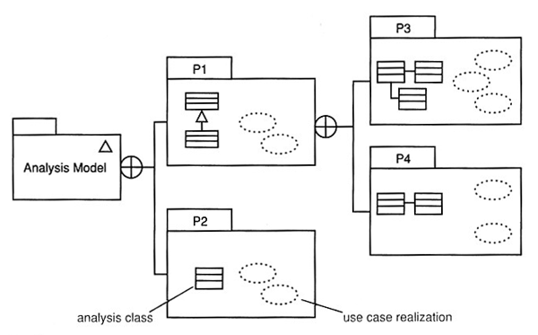
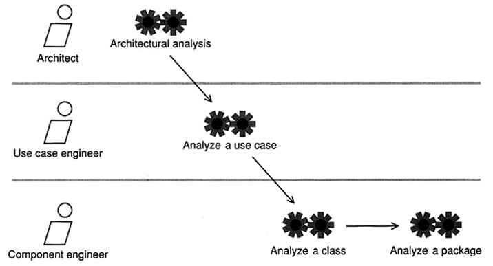
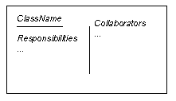

Software Engineering
The Analysis Workflow
Agenda
Modeling and Simulation Model

- A class is a descriptor (template) for a set of objects that have the
same features (attributes, operations, methods, relationships, and
behavior).
- An interaction is a unit of behavior of a context classifier, for
example a use case. The classifier provides the context for the interaction.
Ways of using UML
- UML class diagrams as sketch - result of requirement analysis
- UML class diagrams as blueprint - result of a design process
based on class sketches
- UML as programming language - UML diagrams are compiled directly
to executable code
Analysis modeling is strategic as we are trying to model the system's
essential behavior.

- In the analysis workflow, two key artifacts are produced
- analysis classes - these model key concepts of the business domain;
- use case realizations - these illustrate how instances of the analysis
classes can interact to realize behavior specified by a use case.

- Gain understanding and manage strategic system complexity
- Determine the package structure: application-specific vs.
application-general packages
- Find analysis packages
"Analyze a use case" involves creating analysis classes and use case
realization.

Analysis Model - Rules of Thumb
- The analysis model is always in the language of the business
(project glossary describes the vocabulary of the business domain)
- Create models that "tell a story". Each diagram produced should
elucidate same important part of the system's desired behavior.
- Concentrate clearly on capturing the big picture. Don't get
bogged down in the details of how the system will work-there is plenty of
time for this in design
- Distinguish clearly between the problem domain (the business
requirements) and the solution domain (detailed design
consideration). Always focus on abstractions that exist in the problem
domain.
- Always try to minimize coupling. Each association between classes
creates coupling between them.
- Explore inheritance if there seems to be a natural and
compelling hierarchy of abstractions. In analysis never apply inheritance
just to reuse code. Inheritance is the strongest form of coupling between
classes.
- Always ask, "Is the model useful to all the stakeholders?" There's
nothing worse than producing an analysis model that is ignored by the
business users or the designers and developers. Yet this happens all too
often.
- Finally-keep the model simple! Remember, inside every complex
analysis model is a simple analysis model struggling to get out.
Abstractions
Abstraction is a mechanism and
practice to reduce and factor out details so that one can focus on a few
concepts at a time.
Abstraction in SE is the
facility to define objects that represent abstract "experts" that can perform
work, report on and change their state, and "communicate" with other objects in
the system. The term data encapsulation refers to the hiding of expert
structure, but extending the concept of data type from earlier
programming languages to associate behavior most strongly with the data,
and standardizing the way that different data types interact. When abstraction
proceeds into the operations defined, enabling objects of different types to be
substituted, it is called polymorphism. When it proceeds in the structure
of the types or classes, structuring them to simplify a complex set of
relationships, it is called delegation or inheritance.
- Analysis classes model important aspects of problem domain such
as "customer" or "product".
- represent a crisp abstraction in the problem domain
- should map on to real-world business concepts (and carefully named
accordingly)
- An analysis class should map in a clear and unambiguous way to real
world business concepts.
- Finding the analysis class is the key to OO analysis and design.
- Analysis classes only have key attributes and very high-level
responsibilities.
- The name of analysis class should indicate its intent.
- Responsibilities describe cohesive sets of operations.
Anatomy of an Analysis Class
- Analysis classes only have high-level set of attributes and very
high-level responsibilities.
- They indicate the attributes that the resultant design classes
will probably have.
- Analysis class operations specify, at high-level, the key services that
the class must offer. In design they will become actual implantable
operations.
A minimal form of an analysis class consists of the following:
- Name - this is mandatory
- Attributes - attributes names are mandatory although only
important subset of candidate attributes may be modeled at this point
- Operations - in analysis, operations might just be very
high-level statements of the responsibilities of the class. Operations
parameters and return values are only shown where they are important for
understanding the model.
- Visibility - generally not shown
- Stereotypes - may be shown if they enhance the model
- Tagged values - may be shown if they enhance the model
A Paradigm for Finding Analysis Objects and Classes
A class describes the features of set of objects. Every object is an instance
of exactly one class. Finding the right classification scheme is one of the keys
to successful OO analysis.
- Identify the nouns present, and create objects
representing them. Then find the verbs relating to these nouns
(actions) and implement them by adding methods to the objects.
- Leads to larger class hierarchies than we might want
Instead
- Use in analysis CRC modeling, however in
design use
commonality
and
variability oriented modeling as a primary approach than looking for at just nouns and
verbs.
CRC (Class, Responsibility, Collaboration) Modeling
Original CRC paper
CRC is brainstorming technique in which you capture on sticky notes the
important things in the problem domain
Difficulties with OOP:
- Give-up the global knowledge of control that is possible with procedural
programming (global variables, unnecessary pointers, inappropriate reliance
on the implementation of other objects)
- Rely on the local knowledge of objects to accomplish their tasks
- Shift from process, data flow, and data store to class, responsibility,
and collaboration
CRC card - a standard index card divided into three sections showing the name
of the class, the responsibilities of the class, and the collaborators of the
class.
- Finding classes
- Use a use case model as a primary approach than
looking for at just nouns and verbs.
- Look for anything that interacts with the system or is part of the
system.
- Ask yourself, "Is there a customer?"
- Follow the workflow (scenario) of your use cases.
- Look for the three to five main classes immediately.
- Create a new card for a class immediately.
- Use one or two words to describe the class.
- Class names are singular.
- Responsibilities identify problems to be solved.
- Ask yourself what class knows.
- Ask yourself what the class does.
- If you've identified a responsibility, ask yourself what class it
belongs to.
- Sometimes we identify responsibilities that we won't implement, and
that's OK.
- Classes will collaborate to fulfill many of their responsibilities.
- Collaborators (senders - experts looking for other experts) will send or
be sent messages in the course of satisfying responsibilities.
- Collaboration occurs when a sender needs information that it doesn't
have.
- Collaboration occurs when a sender needs to modify information that
it doesn't have.
- There will always be at least one initiator of any given
collaboration.
- Sometimes the collaboration does the bulk of the work.
- New responsibilities may be created to fulfill the collaboration.
- Don't pass the buck.
CRC Cards

Model, view, controller (MVC) Paradigm

CRC Process
- Explain that this is a true brainstorm
- Explain the CRC modeling technique
- Interactively perform the following modeling steps:
- Find classes
- Find responsibilities
- Define collaborators
- Define use cases
in your CRC terms
- Rearrange the cards
- Prototype
- Perform use-case scenario
- Stakeholder involvement is essential for CRC success.
- Important business concepts generally become classes.
Finding Classes by Using RUP Stereotypes
- It can be complementary to CRC modeling
- Three distinct types of analysis class can be distinguished
- <<entity>> - a class that is used to model persistent
information about something
- value classes
- cut across many use case
- are manipulated by control classes
- provide info to, and accept info from, boundary classes
- represent key things managed by the system (e.g., Customer)
- are often persistent
- <<control>> - a class that encapsulates use-case-specific
behavior
- <<boundary>> - a class that mediates interaction between the
system and its environment
- communicate with external actors
- user interface classes - that interface between the system and
humans
- system interface classes - that interface with other systems
- device interface classes - that interface with external
devices (sensors)